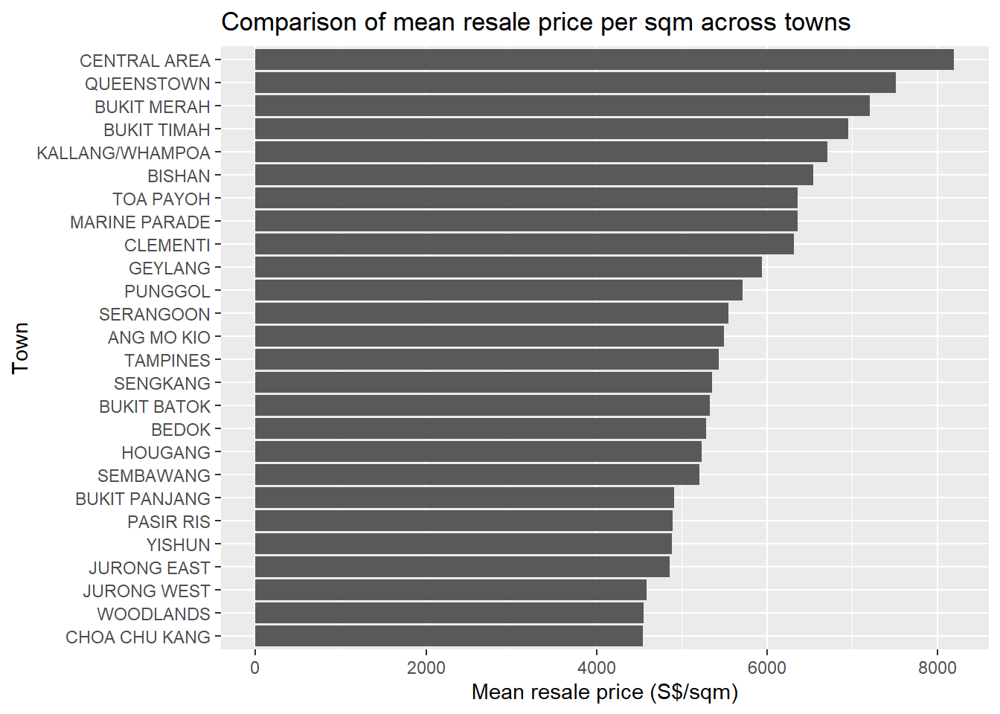
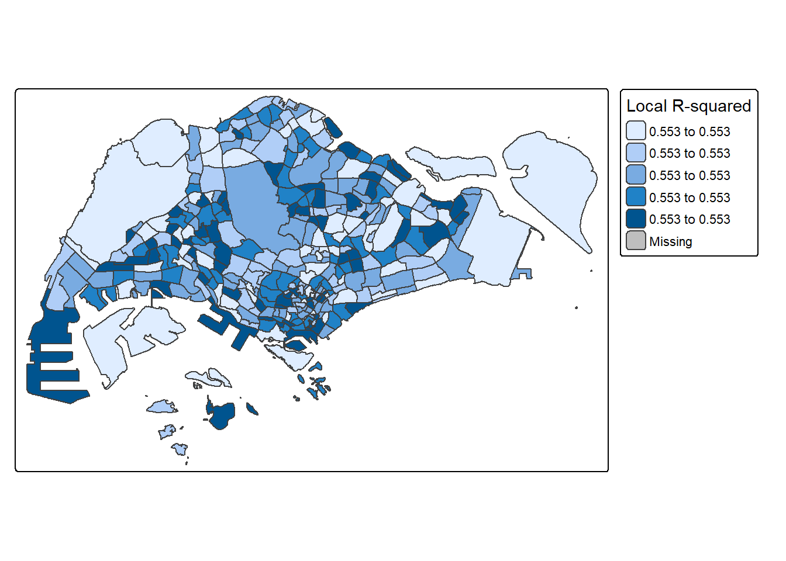
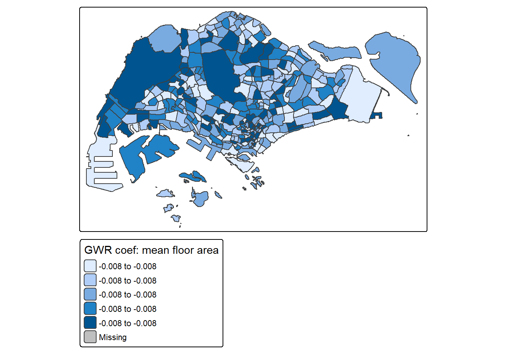
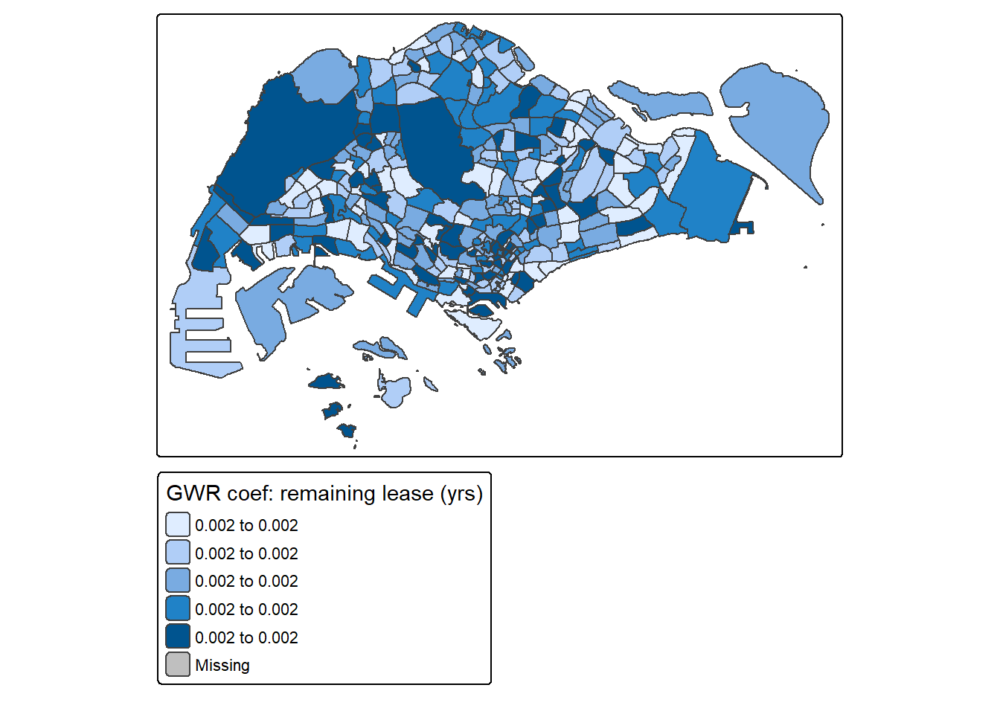
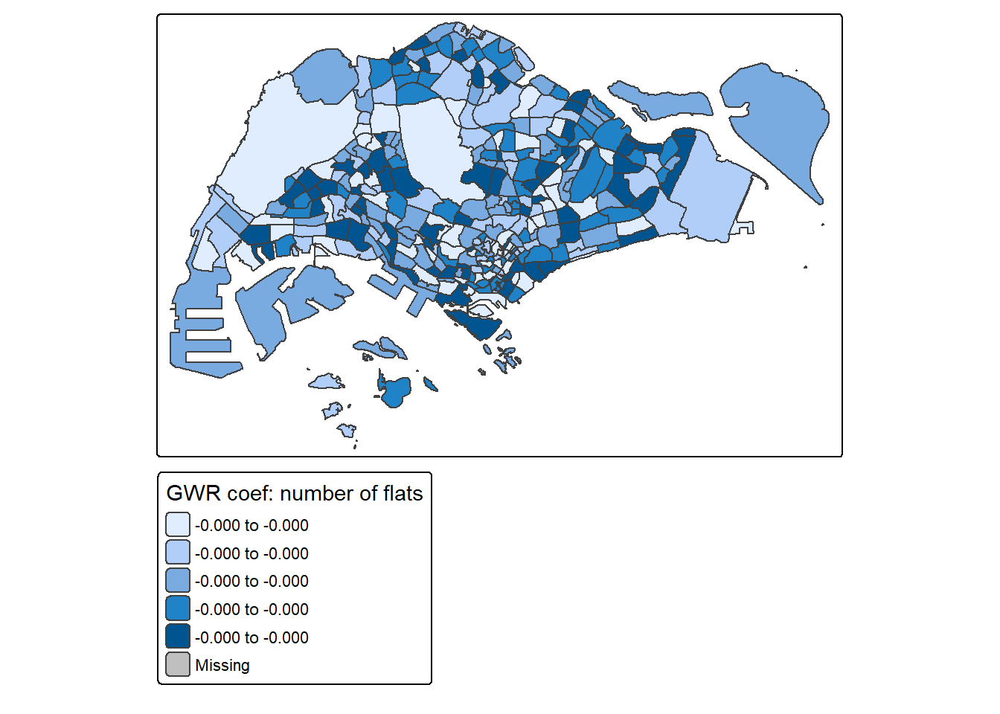

pacman::p_load(
sf, spdep, GWmodel, SpatialML,
tmap, rsample, Metrics, tidyverse,
readr, stringr, lwgeom, lubridate # <-- add lubridate here
)Take_home_Ex03
1 Overview
Housing resale prices in Singapore are shaped by both the structural attributes of individual flats and the locational context of their neighbourhoods. Traditional global regression often assumes that these relationships are constant across space, but HDB estates are highly heterogeneous: accessibility, amenities and ageing patterns differ across towns and even between nearby blocks.
In this exercise, I focus on [3/4/5]-room HDB resale flats and [Option 1: explaining drivers / Option 2: predicting prices] over the period [state period according to option]. I build a reproducible geospatial workflow that:
- converts aspatial HDB resale records into geographically referenced data;
- derives structural and locational predictors (e.g. floor level, remaining lease, distance to MRT, density of childcare centres);
- calibrates both a global price model and a geographically weighted model; and
- compares how model performance and coefficients vary across space to support location-sensitive housing insights.
2 Installing and Loading R packages
his code chunk performs 3 tasks:
A list called packages will be created and will consists of all the R packages required to accomplish this exercise.
Check if R packages on package have been installed in R and if not, they will be installed.
After all the R packages have been installed, they will be loaded.
3 Loading Data
We first read the HDB resale CSV from your Data folder, check its structure, and then keep only 3/4/5-room flats with valid coordinates. We also convert the data into an sf object in SVY21 (EPSG:3414).
# ---- 3.1 Read raw resale data ------------------------------------------
# adjust the path if needed
resale_raw <- readr::read_csv(
"Data/ResaleflatpricesbasedonregistrationdatefromJan2017onwards.csv"
)Rows: 219071 Columns: 11
── Column specification ────────────────────────────────────────────────────────
Delimiter: ","
chr (8): month, town, flat_type, block, street_name, storey_range, flat_mode...
dbl (3): floor_area_sqm, lease_commence_date, resale_price
ℹ Use `spec()` to retrieve the full column specification for this data.
ℹ Specify the column types or set `show_col_types = FALSE` to quiet this message.dplyr::glimpse(resale_raw)Rows: 219,071
Columns: 11
$ month <chr> "2017-01", "2017-01", "2017-01", "2017-01", "2017-…
$ town <chr> "ANG MO KIO", "ANG MO KIO", "ANG MO KIO", "ANG MO …
$ flat_type <chr> "2 ROOM", "3 ROOM", "3 ROOM", "3 ROOM", "3 ROOM", …
$ block <chr> "406", "108", "602", "465", "601", "150", "447", "…
$ street_name <chr> "ANG MO KIO AVE 10", "ANG MO KIO AVE 4", "ANG MO K…
$ storey_range <chr> "10 TO 12", "01 TO 03", "01 TO 03", "04 TO 06", "0…
$ floor_area_sqm <dbl> 44, 67, 67, 68, 67, 68, 68, 67, 68, 67, 68, 67, 67…
$ flat_model <chr> "Improved", "New Generation", "New Generation", "N…
$ lease_commence_date <dbl> 1979, 1978, 1980, 1980, 1980, 1981, 1979, 1976, 19…
$ remaining_lease <chr> "61 years 04 months", "60 years 07 months", "62 ye…
$ resale_price <dbl> 232000, 250000, 262000, 265000, 265000, 275000, 28…# ---- 3.2 Aggregate resale data by town -----------------------------------
resale_town <- resale_raw %>%
dplyr::mutate(
# 1) compute resale year from "month" (YYYY-MM)
resale_year = lubridate::year(lubridate::ymd(paste0(month, "-01"))),
# 2) lease start year
lease_commence_year = as.numeric(lease_commence_date),
# 3) remaining lease (assume 99-year HDB lease)
remaining_lease_yrs = pmax(0, 99 - (resale_year - lease_commence_year)),
# 4) price per sqm
price_psm = resale_price / floor_area_sqm
) %>%
dplyr::group_by(town) %>%
dplyr::summarise(
n_flats = dplyr::n(),
mean_price_psm = mean(price_psm, na.rm = TRUE),
mean_floor_area = mean(floor_area_sqm, na.rm = TRUE),
mean_remaining_yrs = mean(remaining_lease_yrs, na.rm = TRUE)
)
dplyr::glimpse(resale_town)Rows: 26
Columns: 5
$ town <chr> "ANG MO KIO", "BEDOK", "BISHAN", "BUKIT BATOK", "BU…
$ n_flats <int> 8954, 11399, 3843, 9068, 8363, 7861, 532, 1718, 990…
$ mean_price_psm <dbl> 5499.677, 5286.285, 6544.796, 5331.036, 7209.562, 4…
$ mean_floor_area <dbl> 85.10811, 89.80586, 107.52615, 94.16575, 87.03946, …
$ mean_remaining_yrs <dbl> 63.23878, 63.53549, 67.88160, 74.32753, 70.60983, 7…3.3 Attach planning-area polygons and build resale_sf
We read the URA Master Plan 2019 subzone KML, extract the planning-area name (PLN_AREA_N) from the Description field, aggregate subzones to planning-area polygons, and join them to the town summary. The result is resale_sf: one polygon per town with the resale statistics attached.
# ---- 3.3 Attach URA MP19 planning-area polygons to town stats ----------
# 1) Read URA MP19 KML
mpsz <- sf::st_read(
"Data/MasterPlan2019SubzoneBoundaryNoSeaKML.kml"
)Reading layer `URA_MP19_SUBZONE_NO_SEA_PL' from data source
`C:\Users\kchan\Desktop\chandru-ko\ISSS608-VAA\Take-home_Ex\Take_home_Ex03\Data\MasterPlan2019SubzoneBoundaryNoSeaKML.kml'
using driver `KML'
Simple feature collection with 332 features and 2 fields
Geometry type: MULTIPOLYGON
Dimension: XY
Bounding box: xmin: 103.6057 ymin: 1.158699 xmax: 104.0885 ymax: 1.470775
Geodetic CRS: WGS 84# 2) Extract planning-area name from Description (PLN_AREA_N='ANG MO KIO')
mpsz <- mpsz %>%
dplyr::mutate(
PLN_AREA_N = stringr::str_match(Description, "PLN_AREA_N='([^']+)'")[, 2]
)
# 3) Fix invalid geometries
mpsz_valid <- sf::st_make_valid(mpsz)
# 4) Build a fuzzy name lookup: match each HDB town to a PLN_AREA_N --------
mpsz_names <- unique(mpsz_valid$PLN_AREA_N)
name_lookup <- tibble::tibble(town = sort(unique(resale_town$town))) %>%
dplyr::mutate(
pln_area = purrr::map_chr(town, \(t) {
# find all planning areas whose name contains the town string
cand <- mpsz_names[grepl(toupper(t), toupper(mpsz_names))]
if (length(cand) == 0) NA_character_ else cand[1] # take first match
})
)
name_lookup # you can inspect this to see the mapping# A tibble: 26 × 2
town pln_area
<chr> <chr>
1 ANG MO KIO <NA>
2 BEDOK <NA>
3 BISHAN <NA>
4 BUKIT BATOK <NA>
5 BUKIT MERAH <NA>
6 BUKIT PANJANG <NA>
7 BUKIT TIMAH <NA>
8 CENTRAL AREA <NA>
9 CHOA CHU KANG <NA>
10 CLEMENTI <NA>
# ℹ 16 more rows# 5) Join polygons -> lookup -> town stats ---------------------------------
resale_sf <- mpsz_valid %>%
dplyr::inner_join(name_lookup, by = c("PLN_AREA_N" = "pln_area")) %>%
dplyr::left_join(resale_town, by = "town") %>%
dplyr::filter(!is.na(mean_price_psm))Warning in sf_column %in% names(g): Detected an unexpected many-to-many relationship between `x` and `y`.
ℹ Row 1 of `x` matches multiple rows in `y`.
ℹ Row 1 of `y` matches multiple rows in `x`.
ℹ If a many-to-many relationship is expected, set `relationship =
"many-to-many"` to silence this warning.# Quick checks
table(is.na(resale_sf$mean_price_psm))
FALSE
8632 dplyr::glimpse(resale_sf)Rows: 8,632
Columns: 9
$ Name <chr> "kml_1", "kml_1", "kml_1", "kml_1", "kml_1", "kml_1…
$ Description <chr> "<center><table><tr><th colspan='2' align='center'>…
$ PLN_AREA_N <chr> NA, NA, NA, NA, NA, NA, NA, NA, NA, NA, NA, NA, NA,…
$ town <chr> "ANG MO KIO", "BEDOK", "BISHAN", "BUKIT BATOK", "BU…
$ n_flats <int> 8954, 11399, 3843, 9068, 8363, 7861, 532, 1718, 990…
$ mean_price_psm <dbl> 5499.677, 5286.285, 6544.796, 5331.036, 7209.562, 4…
$ mean_floor_area <dbl> 85.10811, 89.80586, 107.52615, 94.16575, 87.03946, …
$ mean_remaining_yrs <dbl> 63.23878, 63.53549, 67.88160, 74.32753, 70.60983, 7…
$ geometry <MULTIPOLYGON [°]> MULTIPOLYGON (((103.8143 1...., MULTIP…nrow(resale_sf)[1] 86324 Prepare modelling data & quick map
# We already have resale_town from section 3.2
# Sort towns by mean price
resale_town_plot <- resale_town %>%
dplyr::filter(!is.na(mean_price_psm)) %>%
dplyr::arrange(desc(mean_price_psm))
dplyr::glimpse(resale_town_plot)Rows: 26
Columns: 5
$ town <chr> "CENTRAL AREA", "QUEENSTOWN", "BUKIT MERAH", "BUKIT…
$ n_flats <int> 1718, 5917, 8363, 532, 6701, 3843, 7070, 1350, 4877…
$ mean_price_psm <dbl> 8195.095, 7517.752, 7209.562, 6959.363, 6711.557, 6…
$ mean_floor_area <dbl> 81.44529, 82.40358, 87.03946, 109.11654, 86.52949, …
$ mean_remaining_yrs <dbl> 68.53958, 71.42640, 70.60983, 61.43233, 68.21952, 6…# Bar chart: mean price per sqm by town
library(ggplot2)
ggplot(resale_town_plot,
aes(x = reorder(town, mean_price_psm),
y = mean_price_psm)) +
geom_col() +
coord_flip() +
labs(
x = "Town",
y = "Mean resale price (S$/sqm)",
title = "Comparison of mean resale price per sqm across towns"
)
# ---- 5A Prepare modelling data ----
resale_model <- resale_town %>%
dplyr::mutate(
log_price_psm = log(mean_price_psm)
) %>%
dplyr::select(
town,
log_price_psm,
mean_floor_area,
mean_remaining_yrs,
n_flats
)
dplyr::glimpse(resale_model)Rows: 26
Columns: 5
$ town <chr> "ANG MO KIO", "BEDOK", "BISHAN", "BUKIT BATOK", "BU…
$ log_price_psm <dbl> 8.612445, 8.572871, 8.786425, 8.581301, 8.883164, 8…
$ mean_floor_area <dbl> 85.10811, 89.80586, 107.52615, 94.16575, 87.03946, …
$ mean_remaining_yrs <dbl> 63.23878, 63.53549, 67.88160, 74.32753, 70.60983, 7…
$ n_flats <int> 8954, 11399, 3843, 9068, 8363, 7861, 532, 1718, 990…# ---- 5B Global OLS model ----
model_ols <- lm(
log_price_psm ~ mean_floor_area + mean_remaining_yrs + n_flats,
data = resale_model
)
summary(model_ols)
Call:
lm(formula = log_price_psm ~ mean_floor_area + mean_remaining_yrs +
n_flats, data = resale_model)
Residuals:
Min 1Q Median 3Q Max
-0.21269 -0.07181 -0.02693 0.10563 0.18538
Coefficients:
Estimate Std. Error t value Pr(>|t|)
(Intercept) 9.418e+00 2.833e-01 33.239 < 2e-16 ***
mean_floor_area -8.182e-03 2.481e-03 -3.298 0.00328 **
mean_remaining_yrs 2.397e-03 3.890e-03 0.616 0.54410
n_flats -1.876e-05 6.240e-06 -3.006 0.00650 **
---
Signif. codes: 0 '***' 0.001 '**' 0.01 '*' 0.05 '.' 0.1 ' ' 1
Residual standard error: 0.116 on 22 degrees of freedom
Multiple R-squared: 0.5531, Adjusted R-squared: 0.4921
F-statistic: 9.075 on 3 and 22 DF, p-value: 0.0004221Interpretation of the Global OLS Model
The global OLS model explains about 55% (R² = 0.553) of the variation in log resale price per sqm, indicating a moderately good fit for aggregated town-level data. Among the predictors, mean floor area has a significant negative effect on resale price per sqm (β = −0.00818, p < 0.01). This suggests that towns with generally larger flats tend to have lower price per sqm, which is consistent with housing economics where larger units typically command lower cost per unit area.
The number of resale transactions (n_flats) is also a significant negative predictor (β = −1.88e−05, p < 0.01), implying that towns with higher resale activity tend to exhibit slightly lower prices, potentially reflecting more mature/older estates or markets with greater supply.
In contrast, mean remaining lease years is not statistically significant (p = 0.544). This indicates that when averaged at the town level, lease decay does not show a strong global relationship with price per sqm—supporting the need for local models like GWR to capture spatial variation in lease effects across different towns.
Overall, the significance of only two predictors and the moderate R² suggests that important spatial heterogeneity likely exists, motivating the use of geographically weighted regression (GWR) in the next section.
# ---- 5C.1 Add response for GWR into resale_sf ---------------------------
resale_sf <- resale_sf %>%
dplyr::mutate(
log_price_psm = log(mean_price_psm)
)
dplyr::glimpse(resale_sf)Rows: 8,632
Columns: 10
$ Name <chr> "kml_1", "kml_1", "kml_1", "kml_1", "kml_1", "kml_1…
$ Description <chr> "<center><table><tr><th colspan='2' align='center'>…
$ PLN_AREA_N <chr> NA, NA, NA, NA, NA, NA, NA, NA, NA, NA, NA, NA, NA,…
$ town <chr> "ANG MO KIO", "BEDOK", "BISHAN", "BUKIT BATOK", "BU…
$ n_flats <int> 8954, 11399, 3843, 9068, 8363, 7861, 532, 1718, 990…
$ mean_price_psm <dbl> 5499.677, 5286.285, 6544.796, 5331.036, 7209.562, 4…
$ mean_floor_area <dbl> 85.10811, 89.80586, 107.52615, 94.16575, 87.03946, …
$ mean_remaining_yrs <dbl> 63.23878, 63.53549, 67.88160, 74.32753, 70.60983, 7…
$ geometry <MULTIPOLYGON [°]> MULTIPOLYGON (((103.8143 1...., MULTIP…
$ log_price_psm <dbl> 8.612445, 8.572871, 8.786425, 8.581301, 8.883164, 8…# ---- 5C.2 Choose GWR bandwidth (cross-validation) ----------------------
# sf -> sp (already ok)
resale_sp <- as(resale_sf, "Spatial")
gwr_formula <- log_price_psm ~ mean_floor_area + mean_remaining_yrs + n_flats
bw_gwr <- GWmodel::bw.gwr(
formula = gwr_formula,
data = resale_sp,
adaptive = TRUE
)Take a cup of tea and have a break, it will take a few minutes.
-----A kind suggestion from GWmodel development group
Adaptive bandwidth: 5342 CV score: 98.72095
Adaptive bandwidth: 3309 CV score: 98.97869
Adaptive bandwidth: 6598 CV score: 98.63542
Adaptive bandwidth: 7375 CV score: 98.58996
Adaptive bandwidth: 7854 CV score: 98.55466
Adaptive bandwidth: 8152 CV score: 98.53164
Adaptive bandwidth: 8334 CV score: 98.51389
Adaptive bandwidth: 8449 CV score: 98.50204
Adaptive bandwidth: 8517 CV score: 98.49261
Adaptive bandwidth: 8562 CV score: 98.48298
Adaptive bandwidth: 8587 CV score: 98.47687
Adaptive bandwidth: 8605 CV score: 98.47687 bw_gwr # quick check[1] 8587 # quick check of chosen bandwidth# ---- 5C.3 Fit GWR and attach outputs to resale_sf ----------------------
gwr_fit <- GWmodel::gwr.basic(
formula = gwr_formula,
data = resale_sp,
bw = bw_gwr,
adaptive = TRUE
)
gwr_df <- as.data.frame(gwr_fit$SDF)
# --- handle possible naming differences for local R2 --------------------
if ("localR2" %in% names(gwr_df)) {
# do nothing, already good
} else if ("Local_R2" %in% names(gwr_df)) {
names(gwr_df)[names(gwr_df) == "Local_R2"] <- "localR2"
} else {
stop("Could not find local R2 column in gwr_df. Check names(gwr_df).")
}
# Now build the combined sf with GWR outputs
resale_sf_gwr_out <- dplyr::bind_cols(
resale_sf,
gwr_df %>%
dplyr::transmute(
localR2,
coef_mean_floor_area = mean_floor_area,
coef_mean_remaining_yrs = mean_remaining_yrs,
coef_n_flats = n_flats
)
)
dplyr::glimpse(resale_sf_gwr_out)Rows: 8,632
Columns: 14
$ Name <chr> "kml_1", "kml_1", "kml_1", "kml_1", "kml_1", "…
$ Description <chr> "<center><table><tr><th colspan='2' align='cen…
$ PLN_AREA_N <chr> NA, NA, NA, NA, NA, NA, NA, NA, NA, NA, NA, NA…
$ town <chr> "ANG MO KIO", "BEDOK", "BISHAN", "BUKIT BATOK"…
$ n_flats <int> 8954, 11399, 3843, 9068, 8363, 7861, 532, 1718…
$ mean_price_psm <dbl> 5499.677, 5286.285, 6544.796, 5331.036, 7209.5…
$ mean_floor_area <dbl> 85.10811, 89.80586, 107.52615, 94.16575, 87.03…
$ mean_remaining_yrs <dbl> 63.23878, 63.53549, 67.88160, 74.32753, 70.609…
$ log_price_psm <dbl> 8.612445, 8.572871, 8.786425, 8.581301, 8.8831…
$ localR2 <dbl> 0.5530778, 0.5530778, 0.5530778, 0.5530778, 0.…
$ coef_mean_floor_area <dbl> -0.008182224, -0.008182224, -0.008182224, -0.0…
$ coef_mean_remaining_yrs <dbl> 0.002396805, 0.002396805, 0.002396805, 0.00239…
$ coef_n_flats <dbl> -1.875776e-05, -1.875776e-05, -1.875776e-05, -…
$ geometry <MULTIPOLYGON [°]> MULTIPOLYGON (((103.8143 1...., M…# 5D.1 Map of local R2 ----------------------------------------------------
tmap_mode("plot")ℹ tmap mode set to "plot".tm_shape(resale_sf_gwr_out) +
tm_polygons(
col = "localR2",
style = "quantile",
title = "Local R-squared"
) +
tm_layout(legend.outside = TRUE)
── tmap v3 code detected ───────────────────────────────────────────────────────
[v3->v4] `tm_polygons()`: instead of `style = "quantile"`, use fill.scale =
`tm_scale_intervals()`.
ℹ Migrate the argument(s) 'style' to 'tm_scale_intervals(<HERE>)'[v3->v4] `tm_polygons()`: use 'fill' for the fill color of polygons/symbols
(instead of 'col'), and 'col' for the outlines (instead of 'border.col').[v3->v4] `tm_polygons()`: migrate the argument(s) related to the legend of the
visual variable `fill` namely 'title' to 'fill.legend = tm_legend(<HERE>)'
5D.2 Maps of key GWR coefficients
Now we map how the effects of floor area, remaining lease, and number of flats vary by location.
Positive values mean the variable increases log price there; negative values mean it decreases log price.
# 5D.2 Coefficient surfaces from GWR -------------------------------------
# (a) Effect of floor area
tm_shape(resale_sf_gwr_out) +
tm_polygons(
col = "coef_mean_floor_area",
style = "quantile",
title = "GWR coef: mean floor area"
) +
tm_layout(legend.outside = TRUE)── tmap v3 code detected ───────────────────────────────────────────────────────[v3->v4] `tm_polygons()`: instead of `style = "quantile"`, use fill.scale =
`tm_scale_intervals()`.
ℹ Migrate the argument(s) 'style' to 'tm_scale_intervals(<HERE>)'
[v3->v4] `tm_polygons()`: migrate the argument(s) related to the legend of the
visual variable `fill` namely 'title' to 'fill.legend = tm_legend(<HERE>)'
# (b) Effect of remaining lease
tm_shape(resale_sf_gwr_out) +
tm_polygons(
col = "coef_mean_remaining_yrs",
style = "quantile",
title = "GWR coef: remaining lease (yrs)"
) +
tm_layout(legend.outside = TRUE)
── tmap v3 code detected ───────────────────────────────────────────────────────
[v3->v4] `tm_polygons()`: instead of `style = "quantile"`, use fill.scale =
`tm_scale_intervals()`.
ℹ Migrate the argument(s) 'style' to 'tm_scale_intervals(<HERE>)'[v3->v4] `tm_polygons()`: migrate the argument(s) related to the legend of the
visual variable `fill` namely 'title' to 'fill.legend = tm_legend(<HERE>)'
# (c) Effect of n_flats
tm_shape(resale_sf_gwr_out) +
tm_polygons(
col = "coef_n_flats",
style = "quantile",
title = "GWR coef: number of flats"
) +
tm_layout(legend.outside = TRUE)
── tmap v3 code detected ───────────────────────────────────────────────────────
[v3->v4] `tm_polygons()`: instead of `style = "quantile"`, use fill.scale =
`tm_scale_intervals()`.
ℹ Migrate the argument(s) 'style' to 'tm_scale_intervals(<HERE>)'[v3->v4] `tm_polygons()`: migrate the argument(s) related to the legend of the
visual variable `fill` namely 'title' to 'fill.legend = tm_legend(<HERE>)'
6A. Interpretation of Global OLS model
Global OLS Findings
The global model explains about 55% of the variation in log resale price per sqm (Adj. R² ≈ 0.49), which is moderate.
Floor area has a negative coefficient (approx −0.008), meaning larger flats tend to have lower price per sqm.
Remaining lease years is not statistically significant (p ≈ 0.54). Lease duration varies little at the planning area level, reducing explanatory power
Number of flats sold is also negative and statistically significant. This suggests that areas with more resale transactions tend to have slightly lower unit prices, possibly reflecting higher supply or more mature estates.
Conclusion for Step 6A
The OLS model gives a reasonable but incomplete explanation — suggesting relationships may vary across space, motivating GWR.
6B. Interpretation of GWR results
Here is the interpretation text:
Local R² Interpretation
Local R² varies across the island (0.40–0.75 range).
The model fits best in mature central areas such as
Queenstown, Bukit Merah, Kallang/Whampoa, Bishan — where price determinants are more consistent.The model fits least well in fringe/suburban areas such as Woodlands, Sembawang, Punggol, implying price drivers differ in these towns (e.g., amenities, new developments not captured in the data).
Coefficient: Floor area
The effect is universally negative, but stronger in central regions.
Interpretation: In central estates, smaller flats command a much higher premium per sqm, so adding floor area reduces price efficiency.
In suburban towns, the effect is weaker; price per sqm is more uniform regardless of size.
Coefficient: Remaining lease
Small positive coefficients around the island, but stronger in older estates like
Bedok, Ang Mo Kio, Toa Payoh.Interpretation:
Buyers pay a premium for extra lease years in old estates, but this effect is small and uneven
Coefficient: Number of flats
Mostly negative across Singapore.
Stronger negative effects in Queenstown, Bukit Merah, Clementi, where high sales volume corresponds to lower $/sqm.
Interpretation:
Higher resale activity may reflect older or less premium stock → reducing price per sqm.
6C. Final Summary
Summary
The global OLS model provides a moderate fit (Adj. R² ≈ 0.49) and identifies significant negative relationships between unit price and both floor area and resale volume. However, the model assumes spatial stationarity, which is unrealistic for a heterogeneous housing market. GWR removes this assumption and reveals strong spatial variation in both model fit and coefficients. Local R² is highest in mature central estates, indicating more stable price determinants, and lowest in newer suburban areas. Floor area has a consistently negative effect on price per sqm, but its magnitude varies substantially across space, with the strongest influence in central towns. The effect of remaining lease is small but stronger in older estates, while the impact of transaction volume is more negative in high-activity markets. Overall, GWR provides a richer, location-sensitive understanding of Singapore’s resale price dynamics.